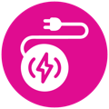

Cordless
It's USB-rechargeable are as convenient as it gets. Once charged, you can use the Vitamer to make smoothies anywhere even in the middle of the desert. Just take it out, fill it with your favourite ingredients and press the go button.

Compact
t's a personal blender for a reason. I he Vitamer boasts a 12 oz capacity, enough for a cup and a half. It weighs no more than a pound and can whip up a juice for you in under 30 seconds.
powerful
Small size, big pertormance. Vitamer is equipped with 4 sharp stainless-steel blades. They cut through virtually everything. 20000 rpm turning everything into a smooth liquid. Anything from fresh fruits and veggies to frozen ones. With all that power would you believe it is very quiet.

Self Cleaning
Not a fan of cleanups? Just add water, soap and mix it all up. Rinse and you're jood to go! The seal is made of food- grade PP, and the body of Tritan, an environmentally friendly material. Vitamer makes everything a cakewalk, even the cleaning up.